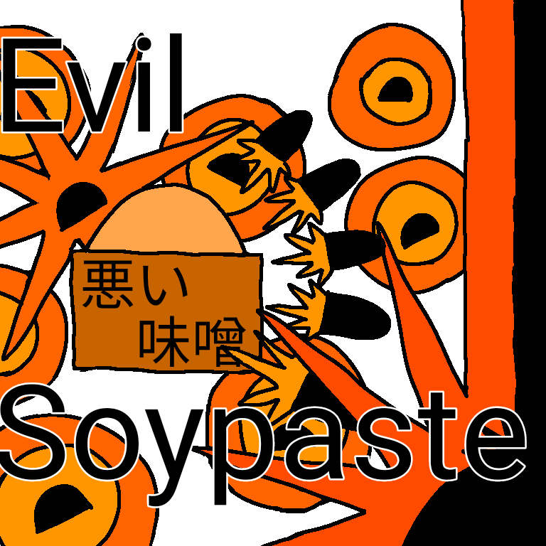
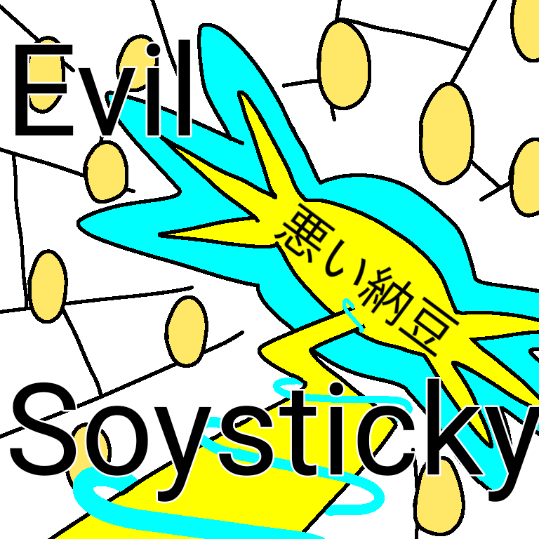
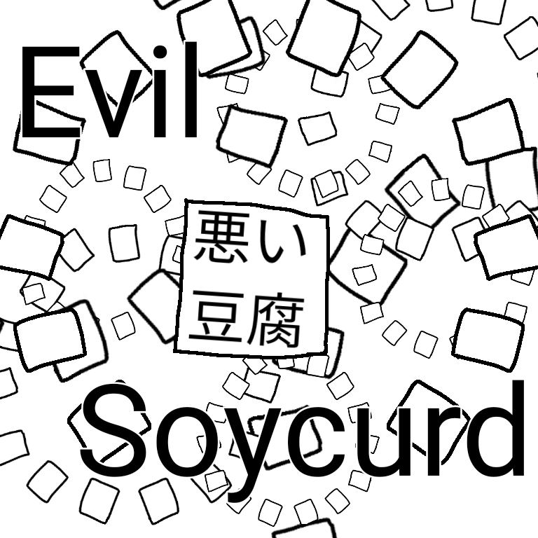

悪い豆たちとの戦い
世界を大豆に変えてしまおうと企んでいる「悪い豆」たち。その構成員は大豆の加工食品たちであり、強大な力を有していた……。
プレイヤーよ。彼らを倒し、邪悪な「世界大豆化計画」を阻止せよ！
第一幹部・悪い醤油
基礎情報
悪い豆の一番目の幹部。醤油の姿をしており、醤油の自由自在な流動を使った奇抜な攻撃をしてくる。
攻略情報
「醤油水滴」ATK:1
醤油滴を追尾しながら発射してくる。左右に動いて回避しよう。方向転換は発射と同時に行うとよい。
「醤油水沫」ATK:3
醤油滴を追尾しながら発射してくる。軌道が読みづらく、かつ自機に近づくと膨張してくるが、冷静に左右に動いて回避しよう。
「容器殴打」ATK:3
悪い醤油の本体が追尾しながら殴打してくる。戻りが若干遅いため、攻撃後の悪い醤油にも気を付けながら左右に動いて回避しよう。
「醤油水流」ATK:5
醤油流を追尾しながら発射してくる。赤い警告ラインの上に発射されるため、それに注意しながら、端に追い込まれないように大きく動いて回避しよう。
「醤油急流」ATK:3
細く速い醤油流を追尾しながら発射してくる。細かく動いていって回避しよう。
「醤油渦巻」ATK:3
細い醤油流を発射し、そのまま回転しながら攻撃してくる。醤油流が途切れる時を見計らって臨機応変に反対側に移動しながら回避しよう。
「醤油拡散急流」ATK:3
細く速い醤油流を三本同時に追尾しながら発射してくる。赤い警告ラインをよく見て、醤油流の隙間に入って回避しよう。
「醤油激流」ATK:5 - 10
極太の醤油流を画面端に発射した後、その内側で太い醤油流を追尾しながら発射してくる。極太醤油流に当たると大ダメージを受けるので、それに気をつけながら「醤油水流」と同じ動き方で慎重に回避しよう。
第二幹部・悪い豆乳
基礎情報
悪い豆の二番目の幹部。豆乳の姿をしており、豆乳の加工しやすい性質を使った多様な攻撃をしてくる。
攻略情報
「豆乳水流」ATK:3
豆乳流を追尾しながら発射してくる。赤い警告ラインの上に発射されるため、それに注意しながら端に追い込まれないように動いて回避しよう。
「豆乳落水」ATK:4
画面上部に太い豆乳流を発射した後、さらにその豆乳流から太い豆乳流を発射してくる。赤い警告ラインをよく見ながら動いて回避しよう。
「御殻弾」ATK:2
御殻弾を追尾しながら発射してくる。小さく動いて回避しよう。
「大御殻弾」ATK:2 - 4
御殻弾を追尾しながら5回発射した後、大きい御殻弾を追尾しながら2回発射してくる。小さい御殻弾は小さく動いて、大きい御殻弾は大きく動いて回避しよう。
「湯葉刃」ATK:1
湯葉刃を追尾しながら発射してくる。左右に動いて回避しよう。方向転換は発射と同時に行うとよい。
「湯葉斬撃」ATK:5
湯葉刃を振り下ろし、斬撃を発生させて攻撃してくる。悪い豆乳の位置を確認しながら、臨機応変に安全な場所に移動して回避しよう。
「滷汁噴射」ATK:3
二又に分かれた滷汁流を発射し、左右に動いた後、再び滷汁流を発射して攻撃してくる。まずは滷汁流の隙間に入って悪い豆乳に合わせて動き、赤い警告ラインが見えたら動く、というように回避しよう。
「豆乳濁流」ATK:1 - 5
湯葉刃と大御殻弾を計3回発射した後、豆乳流を発射し、その隙間に湯葉刃の斬撃で攻撃してくる。大御殻弾の弾道が安全地帯になっているため、そこに位置する豆乳流の隙間に入って回避しよう。
「豆腐弾(型崩れ)」ATK:0
滷汁による豆腐への転化に失敗した状態で攻撃してくる。当たってもダメージは受けない。
第三幹部・悪い味噌

基礎情報
悪い豆の三番目の幹部。味噌の姿をしており、味噌を圧縮した「味噌爆弾」を使った豪快な攻撃をしてくる。
攻略情報
「味噌弾」ATK:2
味噌弾を追尾しながら発射してくる。左右に動いて回避しよう。
「味噌爆弾」ATK:3
着地して1秒後、または自機に当たったときに爆発する味噌爆弾を、追尾しながら発射してくる。爆発のタイミングを見極めながら、左右に動いて回避しよう。
「木桶落下」ATK:3
悪い味噌の本体が追尾しながら落下してくる。左右に動いて回避しよう。
「味噌誘導爆弾」ATK:2
着地してすぐ、または自機に当たったときに爆発する味噌爆弾を、5つまとめて自機狙いで発射してくる。タイミングを見極めながら、左右に動いて回避しよう。
「味噌破片爆弾」ATK:4 - 5
着地して1秒後に爆発し、自機を貫通する爆弾を追尾しながら発射してくる。爆発の形が鋭いため、爆炎に当たらないようにしながら回避しよう。
「味噌焼夷爆弾」ATK:3
自機に当たると爆発し、着地すると炎上する爆弾を追尾しながら8つずつ発射してくる。小さく移動しながら回避しよう。
「味噌衝撃爆弾」ATK:4 - 7
着地して1秒後に爆発し、自機を貫通する爆弾を無作為に発射してくる。爆発がとても大きいため、大きく動いて回避しよう。
「味噌火柱爆弾」ATK:4 - 6
着地してすぐ爆発し、さらに火柱を起こす、自機を貫通する爆弾を追尾しながら発射してくる。悪い味噌の動きを注視しながら、左右に動いて回避しよう。
「味噌破壊爆弾」ATK:4 - 8
より速く、よりダメージが大きくなった「味噌火柱爆弾」を発射してくる。ただし、画面左端と中央と右端にしか発射されないため、これらの地点の中間に移動して回避しよう。
「味噌自壊爆弾」ATK:20
悪い味噌本体が爆弾になり、画面のほぼ全域を巻き込んだ超強力な爆発を起こす。両端のどちらかに移動して回避しよう。
最終幹部・悪い納豆

基礎情報
悪い豆の四番目の幹部。納豆の姿をしており、納豆の糸や電気属性を使った厄介な攻撃をしてくる。
攻略情報
「納豆弾」ATK:2
納豆弾を追尾しながら発射してくる。左右に動いて回避しよう。
「挽割納豆弾」ATK:1
小さい納豆弾を追尾しながら発射してくる。左右に動いて回避しよう。
「大粒納豆弾」ATK:4
大きい納豆弾を追尾しながら発射してくる。間を縫うようにして動いて回避しよう。
「稲藁刺突」ATK:3
悪い納豆の本体が追尾しながら刺突してくる。左右に動いて回避しよう。
「糸引納豆弾」ATK:4
糸で自機の動きを遅くした後、納豆弾を追尾しながら発射してくる。糸が作用する納豆弾の動きにも注意しながら、左右に動いて回避しよう。
「封殺糸陣」ATK:0
自機の動きを遅くしようと糸を発射してくる。糸自体にダメージはないが、動きが遅い状態だと後の攻撃を避けられなくなる。糸が発射される場所を見極めながら動いて回避しよう。
「稲藁稲妻」ATK:5
稲妻を追尾しながら発射してくる。攻撃を中断するタイミングを見極め、左右に動いて回避しよう。
「封殺糸陣・滅」ATK:0
「封殺糸陣」と同じく、これを受けると後の攻撃を避けられなくなる。より速く、手数も多くなっているので、糸が発射される場所をしっかり見極めながら動いて回避しよう。
「神速・稲藁稲妻」ATK:5
稲妻を追尾しながら発射してくる。「稲藁稲妻」に比べて発射の間隔が短いため、左右に動き続けて回避しよう。
「封殺糸陣・戮」ATK:0
「封殺糸陣」「封殺糸陣・滅」と同じく、これを受けると後の攻撃を避けられなくなる。フェイントも織り交ぜてくるようになるため、より慎重に糸が発射される場所を見極めながら動いて回避しよう。
「神勅・稲藁稲妻」ATK:5 - 7
小さい稲妻を追尾しながら発射した後、端から中央にかけて大きい稲妻を3回発射する。小さい稲妻を左右に動いて回避した後、中央付近で大きい稲妻を回避しよう。
悪の首魁・悪い豆腐

基礎情報
悪い豆たちのボス。豆腐の姿をしており、豆腐のとても大きな質量を生かした猛烈な攻撃をしてくる。
攻略情報
「豆腐弾」ATK:3
豆腐弾を追尾しながら発射してくる。左右に動いて回避しよう。方向転換は発射と同時に行うとよい。
「圧縮豆腐砲」ATK:3
豆腐弾を3つ同時に追尾しながら発射してくる。「豆腐弾」とほぼ同じ動きで回避できるので、発射のタイミングをよく見極めよう。
「撹乱豆腐弾」ATK:2 - 4
大きく遅い豆腐弾と小さく速い豆腐弾を追尾しながら発射してくる。小弾は少ない動きで回避し、大弾が来たら大きく回避しよう。
「膨張豆腐弾」ATK:4
時間差で膨張していく豆腐弾を追尾しながら発射してくる。両端に追い込まれないようにしつつ、大きく動いて回避しよう。
「広域豆腐弾」ATK:2
小さい豆腐弾を広範囲かつ無作為に発射してくる。あまり動きすぎずに、射線に入っている時だけ動いて回避しよう。
「反射豆腐弾」ATK:1 - 2
地面に反射するとても小さい豆腐弾を追尾しながら発射してくる。最初の発射は少しずつ動いて回避し、反射してきたときは「広域豆腐弾」の要領であまり動かず回避しよう。
「封鎖豆腐弾」ATK:0
画面全体を覆うように大きい豆腐弾を配置してくるが、不発に終わる。
「融解豆腐弾」ATK:3
画面を真っ白にして、豆腐弾の視認性を悪くした状態で「豆腐弾」を発射してくる。豆腐弾は透明になっても当たるので、「豆腐弾」と同じ動き方で回避しよう。
「連綿豆腐弾」ATK:2
小さい豆腐弾を追尾しながらとても大量に発射してくる。攻撃が始まる前に画面端に移動し、少しづつ動きながら回避しよう。
「極大豆腐弾」ATK:5
とても大きい豆腐弾を追尾しながら発射してくる。「膨張豆腐弾」と同じ動きで回避できる。
「圧縮豆腐砲・改」ATK:3
豆腐弾を7つ連続で追尾しながら発射してくる。攻撃が始まる前に画面端に移動し、端から端へ大きく動いて回避しよう。
「撹拌豆腐弾」ATK:2 - 3
とても速い豆腐弾と小さく速い豆腐弾を追尾しながら発射してくる。小弾に気をつけながら速弾を大きく動いて回避しよう。
「重圧突撃豆腐」ATK:15
とてもとても大きい豆腐弾を無作為に突撃させてくる。画面上に次の突撃の位置が表示されるので、中央に移動し、確認してから安全な場所に動いて回避しよう。
「過剰広域豆腐弾」ATK:2
小さい豆腐弾を広範囲かつ無作為に、大量に発射してくる。「広域豆腐弾」と同じ方法で、より素早く動いて回避しよう。
「膨張連続豆腐弾」ATK:4
時間差で膨張していく豆腐弾を5つ連続で追尾しながら発射してくる。「圧縮豆腐砲・改」と同じ動き方で回避できる。
「音速豆腐弾」ATK:3
とても速い豆腐弾を追尾しながら大量に発射してくる。「豆腐弾」と同じ動き方で、より素早く動いて回避しよう。
「追従封鎖豆腐弾」ATK:4
自機の上を塞ぐように大きい豆腐弾を配置してくる。あまり動かずに回避し、発射が終わってから安全な場所へ動いて回避しよう。
「昇華豆腐弾」ATK:2 - 3
画面を真っ赤にして、豆腐弾と自機の視認性を悪くした状態で「撹拌豆腐弾」を発射してくる。「融解豆腐弾」と同じく、豆腐弾は透明になっても当たるので、悪い豆腐の動きで自機の動きを把握しつつ、「撹拌豆腐弾」と同じ動き方で回避しよう。
「終焉殲滅豆腐弾」ATK:1
今までに使われたあらゆる豆腐弾を追尾しながら発射してくる。絶望的な状況ではあるが、自機の気合いにより制限時間が来るまではゲームオーバーにならないので、それまでにスペースキーで攻撃して悪い豆腐を倒そう。